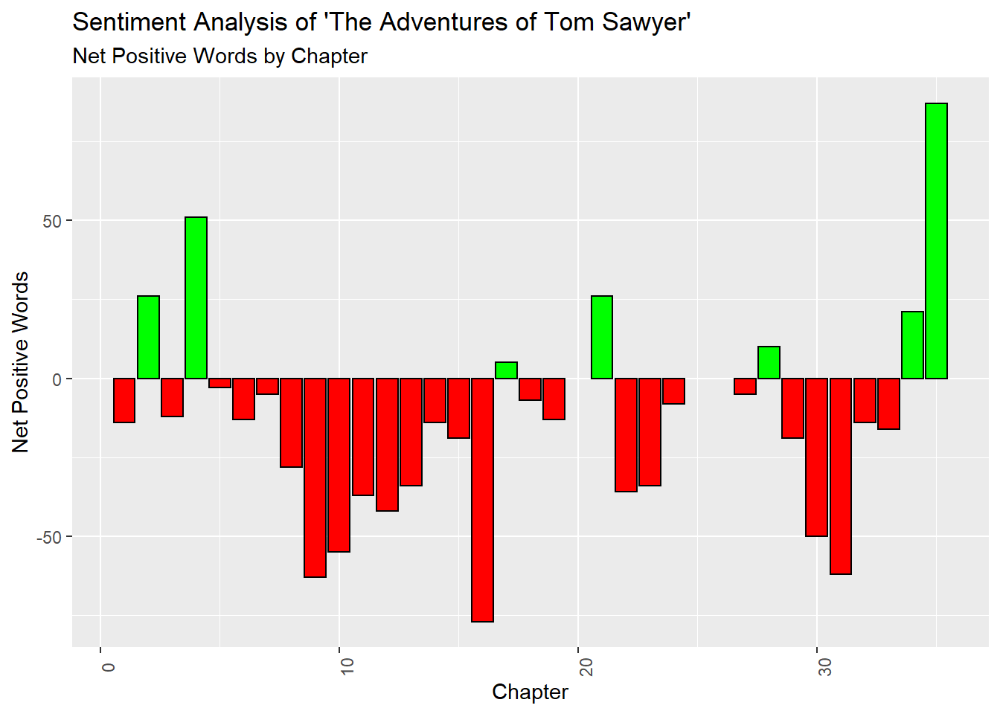
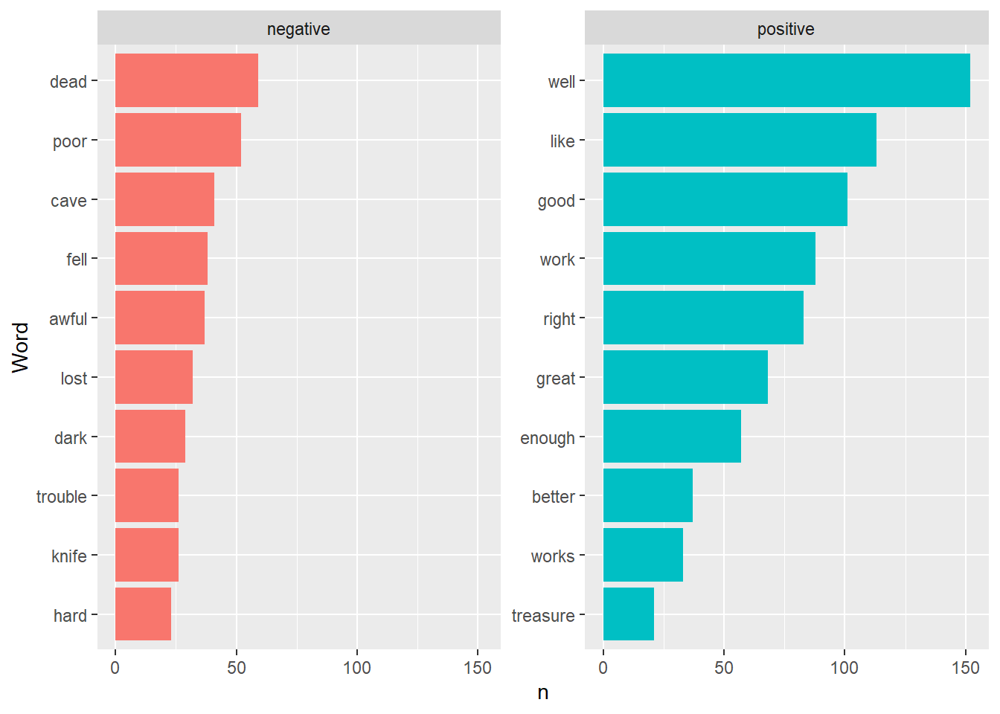
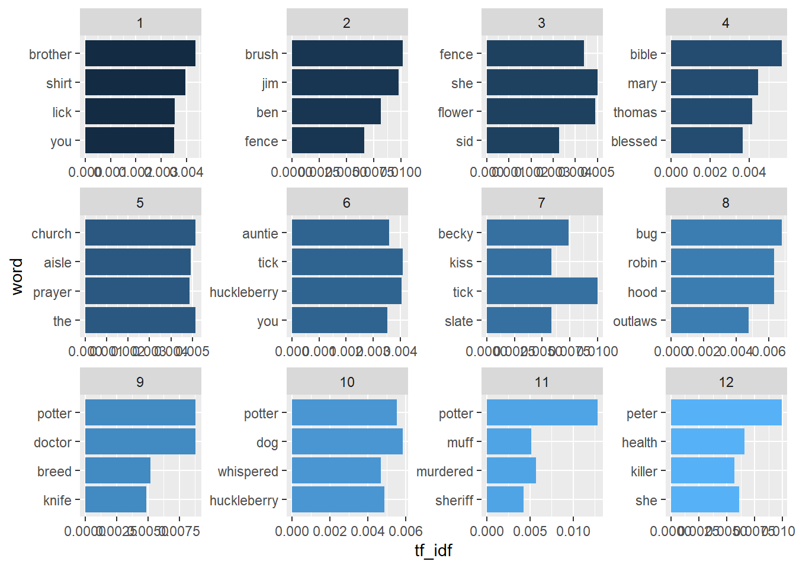
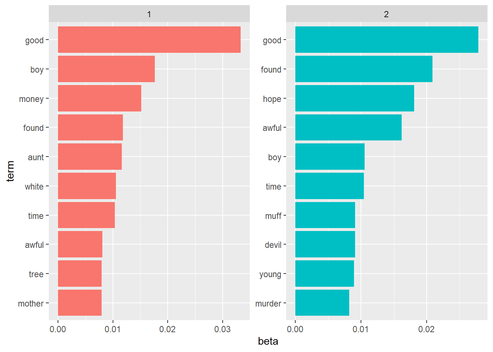

6 Text Analysis
In this section, you will learn.
- More
dplyr - More
ggplot - The basics of
tidytext - The very basics of
topicmodels
6.1 The Adventures of Tom Sawyer
library(tidyverse)
library(tidytext)
library(stringi)
library(topicmodels)
book_raw <- read_file("data_sources/The-Adventures-of-Tom-Sawyer.txt") %>% enframe(name = "Book")
book_raw## # A tibble: 1 x 2
## Book value
## <int> <chr>
## 1 1 "The Project Gutenberg EBook of The Adventures of Tom Sawyer, Complete\r\n\r\nby Mark Twain (Samuel Clemens)\r\n\r\n\r\n\r\nThis eBook is for the use of anyone anywhere a~## Book value
## 1 4237546.2 Find Chapter Splits
To do the analysis, we need to parse the text. The purpose of this section is not a lesson text parsing so we’ll skip the detail. But I will discuss it a little in class.
book <-
book_raw %>%
separate_rows(value, sep = "\nCHAPTER") %>%
slice(-1) %>%
mutate(value = str_remove_all(string = value, pattern = "\n")) %>%
mutate(value = str_replace(value, "jpg", "HERE")) %>%
separate(col = "value", into = c("Chapter", "Text"), sep = "HERE") %>%
filter(!is.na(Text)) %>%
mutate(Chapter = unlist(str_extract_all(Chapter, "[A-Z]+"))) %>%
mutate(Text = str_replace_all(Text, "[.]"," ")) %>%
mutate(Text = str_replace_all(Text, "\r"," ")) %>%
mutate(Chapter = as.numeric(as.roman(Chapter)))
book## # A tibble: 35 x 3
## Book Chapter Text
## <int> <dbl> <chr>
## 1 1 1 " (182K) “TOM!” No answer “TOM!” No answer “What’s gone with that boy, I wonder? You TOM!” No answer The old lady pulled her spectacles down and lo~
## 2 1 2 " (202K) SATURDAY morning was come, and all the summer world was bright and fresh, and brimming with life There was a song in every heart; and if the heart~
## 3 1 3 " (197K) TOM presented himself before Aunt Polly, who was sitting by an open window in a pleasant rearward apartment, which was bedroom, breakfast-room, din~
## 4 1 4 " (218K) THE sun rose upon a tranquil world, and beamed down upon the peaceful village like a benediction Breakfast over, Aunt Polly had family worship: it~
## 5 1 5 " (205K) ABOUT half-past ten the cracked bell of the small church began to ring, and presently the people began to gather for the morning sermon The Sunday~
## 6 1 6 " (202K) MONDAY morning found Tom Sawyer miserable Monday morning always found him so—because it began another week’s slow suffering in school He generall~
## 7 1 7 " (175K) THE harder Tom tried to fasten his mind on his book, the more his ideas wandered So at last, with a sigh and a yawn, he gave it up It seemed to h~
## 8 1 8 " (195K) TOM dodged hither and thither through lanes until he was well out of the track of returning scholars, and then fell into a moody jog He crossed a ~
## 9 1 9 " (174K) AT half-past nine, that night, Tom and Sid were sent to bed, as usual They said their prayers, and Sid was soon asleep Tom lay awake and waited, ~
## 10 1 10 " (171K) THE two boys flew on and on, toward the village, speechless with horror They glanced backward over their shoulders from time to time, apprehensive~
## # ... with 25 more rows6.3 Tokenize the Book
## # A tibble: 70,882 x 3
## Book Chapter word
## <int> <dbl> <chr>
## 1 1 1 182k
## 2 1 1 tom
## 3 1 1 no
## 4 1 1 answer
## 5 1 1 tom
## 6 1 1 no
## 7 1 1 answer
## 8 1 1 what’s
## 9 1 1 gone
## 10 1 1 with
## # ... with 70,872 more rows6.4 Remove ‘stop words’
## Joining, by = "word"## # A tibble: 26,251 x 3
## Book Chapter word
## <int> <dbl> <chr>
## 1 1 1 182k
## 2 1 1 tom
## 3 1 1 answer
## 4 1 1 tom
## 5 1 1 answer
## 6 1 1 what’s
## 7 1 1 boy
## 8 1 1 tom
## 9 1 1 answer
## 10 1 1 lady
## # ... with 26,241 more rows6.5 Join Sentiments
tidytext offers several different sentiment packages. Let’s explore.
## # A tibble: 2,477 x 2
## word value
## <chr> <dbl>
## 1 abandon -2
## 2 abandoned -2
## 3 abandons -2
## 4 abducted -2
## 5 abduction -2
## 6 abductions -2
## 7 abhor -3
## 8 abhorred -3
## 9 abhorrent -3
## 10 abhors -3
## # ... with 2,467 more rows## # A tibble: 6,786 x 2
## word sentiment
## <chr> <chr>
## 1 2-faces negative
## 2 abnormal negative
## 3 abolish negative
## 4 abominable negative
## 5 abominably negative
## 6 abominate negative
## 7 abomination negative
## 8 abort negative
## 9 aborted negative
## 10 aborts negative
## # ... with 6,776 more rows## # A tibble: 4,150 x 2
## word sentiment
## <chr> <chr>
## 1 abandon negative
## 2 abandoned negative
## 3 abandoning negative
## 4 abandonment negative
## 5 abandonments negative
## 6 abandons negative
## 7 abdicated negative
## 8 abdicates negative
## 9 abdicating negative
## 10 abdication negative
## # ... with 4,140 more rows## # A tibble: 13,901 x 2
## word sentiment
## <chr> <chr>
## 1 abacus trust
## 2 abandon fear
## 3 abandon negative
## 4 abandon sadness
## 5 abandoned anger
## 6 abandoned fear
## 7 abandoned negative
## 8 abandoned sadness
## 9 abandonment anger
## 10 abandonment fear
## # ... with 13,891 more rowsAs you can see, each lexicon offers a slightly different way to explore your text.
## Joining, by = "word"## # A tibble: 70,882 x 4
## Book Chapter word sentiment
## <int> <dbl> <chr> <chr>
## 1 1 1 182k <NA>
## 2 1 1 tom <NA>
## 3 1 1 no <NA>
## 4 1 1 answer <NA>
## 5 1 1 tom <NA>
## 6 1 1 no <NA>
## 7 1 1 answer <NA>
## 8 1 1 what’s <NA>
## 9 1 1 gone <NA>
## 10 1 1 with <NA>
## # ... with 70,872 more rows## Joining, by = "word"## # A tibble: 4,778 x 4
## Book Chapter word sentiment
## <int> <dbl> <chr> <chr>
## 1 1 1 wonder positive
## 2 1 1 pride positive
## 3 1 1 well positive
## 4 1 1 perplexed negative
## 5 1 1 loud negative
## 6 1 1 enough positive
## 7 1 1 well positive
## 8 1 1 noise negative
## 9 1 1 slack negative
## 10 1 1 well positive
## # ... with 4,768 more rows6.6 Descriptive Text Statistics
booktokens %>%
left_join(get_sentiments("bing")) %>%
filter(!is.na(sentiment)) %>%
count(Chapter,sentiment)## Joining, by = "word"## # A tibble: 64 x 3
## Chapter sentiment n
## <dbl> <chr> <int>
## 1 1 negative 95
## 2 1 positive 81
## 3 2 negative 40
## 4 2 positive 66
## 5 3 negative 96
## 6 3 positive 84
## 7 4 negative 96
## 8 4 positive 147
## 9 5 negative 63
## 10 5 positive 60
## # ... with 54 more rows6.7 Visualizations
booktokens %>%
left_join(get_sentiments("bing")) %>%
filter(!is.na(sentiment)) %>%
count(Chapter,sentiment) %>%
mutate(n = if_else(sentiment == "negative",n*-1,as.double(n))) %>%
group_by(Chapter) %>%
mutate(order = cur_group_id()) %>% ## dplyr 1.1.0
summarise(n = sum(n)) %>%
mutate(pos = if_else(n>0,"pos","neg")) %>%
ungroup() %>%
ggplot(aes(x=Chapter,y=n,fill = pos, color = pos)) +
geom_col() +
scale_fill_manual(values = c("red","green")) +
scale_color_manual(values = c("black","black")) +
theme(legend.position="none", axis.text.x = element_text(angle = 90)) +
labs(y = "Net Positive Words",
title = "Sentiment Analysis of 'The Adventures of Tom Sawyer'",
subtitle = "Net Positive Words by Chapter")## Joining, by = "word"## `summarise()` ungrouping output (override with `.groups` argument)
6.8 N-Gram Analysis
6.8.1 Uni-Grams
## # A tibble: 7,774 x 2
## word n
## <chr> <int>
## 1 the 3708
## 2 and 3059
## 3 a 1807
## 4 to 1696
## 5 of 1474
## 6 he 1158
## 7 was 1126
## 8 it 1090
## 9 in 943
## 10 that 875
## # ... with 7,764 more rows6.8.2 Remove Stop Words
booktokens %>%
left_join(get_sentiments("bing")) %>%
filter(!is.na(sentiment)) %>%
count(word,sentiment, sort = TRUE)## Joining, by = "word"## # A tibble: 1,358 x 3
## word sentiment n
## <chr> <chr> <int>
## 1 well positive 152
## 2 like positive 113
## 3 good positive 101
## 4 work positive 88
## 5 right positive 83
## 6 great positive 68
## 7 dead negative 59
## 8 enough positive 57
## 9 poor negative 52
## 10 cave negative 41
## # ... with 1,348 more rows6.8.3 Visualize
booktokens %>%
left_join(get_sentiments("bing"), by = "word") %>%
filter(!is.na(sentiment)) %>%
count(word, sentiment, sort = TRUE) %>%
group_by(sentiment) %>%
top_n(10, n) %>%
ungroup() %>%
ggplot(aes(x=fct_reorder(word,n), y = n, fill = sentiment)) +
geom_col(show.legend = FALSE) +
facet_wrap(~sentiment, scales = "free_y") +
coord_flip() +
labs(x="Word")
6.8.4 Bigrams
bookbitokens <- book %>%
unnest_tokens(bigram, Text, token = "ngrams", n = 2, n_min = 2)
bookbitokens## # A tibble: 70,848 x 3
## Book Chapter bigram
## <int> <dbl> <chr>
## 1 1 1 182k tom
## 2 1 1 tom no
## 3 1 1 no answer
## 4 1 1 answer tom
## 5 1 1 tom no
## 6 1 1 no answer
## 7 1 1 answer what’s
## 8 1 1 what’s gone
## 9 1 1 gone with
## 10 1 1 with that
## # ... with 70,838 more rows## # A tibble: 41,080 x 2
## bigram n
## <chr> <int>
## 1 of the 364
## 2 in the 298
## 3 and the 184
## 4 it was 175
## 5 to the 175
## 6 he was 147
## 7 and then 126
## 8 was a 116
## 9 he had 110
## 10 there was 110
## # ... with 41,070 more rows6.8.5 Remove Stop Words in Bigrams
## # A tibble: 70,848 x 4
## Book Chapter word1 word2
## <int> <dbl> <chr> <chr>
## 1 1 1 182k tom
## 2 1 1 tom no
## 3 1 1 no answer
## 4 1 1 answer tom
## 5 1 1 tom no
## 6 1 1 no answer
## 7 1 1 answer what’s
## 8 1 1 what’s gone
## 9 1 1 gone with
## 10 1 1 with that
## # ... with 70,838 more rowsbigrams <-
bookbitokens %>%
separate(bigram, c("word1", "word2"), sep = " ") %>%
filter(!word1 %in% stop_words$word) %>%
filter(!word2 %in% stop_words$word)
bigrams %>%
count(word1, word2, sort = TRUE)## # A tibble: 6,910 x 3
## word1 word2 n
## <chr> <chr> <int>
## 1 project gutenberg 84
## 2 gutenberg tm 56
## 3 injun joe 45
## 4 aunt polly 42
## 5 tom sawyer 23
## 6 injun joe’s 18
## 7 tm electronic 18
## 8 muff potter 15
## 9 archive foundation 13
## 10 gutenberg literary 13
## # ... with 6,900 more rows6.9 Term Frequency
Term Frequency: The number of times that a term occurs in the book.
Inverse Document Frequency: \(\ln(\frac{Total Number of Documents, cache = TRUE}{Total Number of Documents Containing Specified Word, cache = TRUE})\): Measure of how much information the word provides.
Term Frequency - Inverse Document Frequency: Term Frequency * Inverse Document Frequency
6.9.1 Build TF-IDF Data
Words By Chapter
booktokens %>%
count(Chapter, word, sort = TRUE, name = "count") %>%
add_count(word) %>%
spread(Chapter, count) %>%
arrange(desc(n))## # A tibble: 7,774 x 36
## word n `1` `2` `3` `4` `5` `6` `7` `8` `9` `10` `11` `12` `13` `14` `15` `16` `17` `18` `19` `20` `21` `22` `23` `24` `25` `27` `28`
## <chr> <int> <int> <int> <int> <int> <int> <int> <int> <int> <int> <int> <int> <int> <int> <int> <int> <int> <int> <int> <int> <int> <int> <int> <int> <int> <int> <int> <int>
## 1 a 32 66 75 62 132 58 94 34 53 54 52 29 42 81 78 36 129 20 56 26 NA 56 42 41 7 NA 32 25
## 2 all 32 4 8 9 20 7 12 12 6 11 2 3 9 9 6 4 28 5 11 5 NA 9 3 12 1 NA 8 7
## 3 and 32 102 77 110 166 101 139 96 88 99 87 66 77 113 107 86 269 67 138 28 NA 100 49 62 13 NA 27 41
## 4 as 32 16 4 12 18 22 14 10 7 12 10 11 9 9 20 5 26 11 27 2 NA 7 6 14 5 NA 6 8
## 5 be 32 4 5 4 15 7 3 6 11 9 4 5 8 16 7 8 21 3 16 5 NA 10 3 10 3 NA 7 4
## 6 before 32 3 3 4 2 2 3 4 3 2 3 6 2 2 4 5 8 4 2 1 NA 1 2 4 3 NA 2 2
## 7 but 32 19 16 18 22 14 33 22 11 11 18 10 13 28 11 13 46 9 25 8 NA 14 9 21 6 NA 4 7
## 8 for 32 26 11 18 46 27 15 9 6 14 10 12 16 15 12 17 45 3 20 3 NA 11 14 17 3 NA 7 6
## 9 got 32 6 6 6 7 1 10 4 2 5 7 2 1 4 3 2 13 3 7 4 NA 3 4 4 2 NA 1 6
## 10 had 32 13 13 22 27 15 13 8 17 9 8 17 12 21 10 11 45 9 19 6 NA 15 10 5 12 NA 12 5
## # ... with 7,764 more rows, and 7 more variables: `29` <int>, `30` <int>, `31` <int>, `32` <int>, `33` <int>, `34` <int>, `35` <int>Word Frequency Per Chapter and Book
booktokens %>%
count(Chapter, word, sort = TRUE, name = "Chapter_Total") %>%
left_join(
booktokens %>%
count(word, sort = TRUE, name = "Book_Total")
)## Joining, by = "word"## # A tibble: 24,205 x 4
## Chapter word Chapter_Total Book_Total
## <dbl> <chr> <int> <int>
## 1 16 the 275 3708
## 2 16 and 269 3059
## 3 35 the 245 3708
## 4 33 the 205 3708
## 5 30 the 187 3708
## 6 4 the 185 3708
## 7 5 the 167 3708
## 8 4 and 166 3059
## 9 29 the 166 3708
## 10 21 the 162 3708
## # ... with 24,195 more rowsCreate TF-IDF
booktokens %>%
count(Chapter, word, sort = TRUE, name = "Chapter_Total") %>%
left_join(
booktokens %>%
count(word, sort = TRUE, name = "Book_Total")
) %>%
bind_tf_idf(word, Chapter, Chapter_Total) %>%
filter(Chapter_Total!=Book_Total) %>%
filter(tf<1) %>%
arrange(-tf_idf)## Joining, by = "word"## # A tibble: 19,903 x 7
## Chapter word Chapter_Total Book_Total tf idf tf_idf
## <dbl> <chr> <int> <int> <dbl> <dbl> <dbl>
## 1 25 193k 1 2 0.5 2.83 1.42
## 2 20 178k 1 3 0.5 2.43 1.21
## 3 20 t 1 4 0.5 2.43 1.21
## 4 25 t 1 4 0.5 2.43 1.21
## 5 35 works 32 33 0.00636 2.83 0.0180
## 6 19 auntie 6 17 0.00754 2.14 0.0161
## 7 34 jones 5 9 0.00563 2.83 0.0160
## 8 32 cave 9 41 0.00863 1.58 0.0136
## 9 35 e 23 24 0.00457 2.83 0.0129
## 10 11 potter 10 39 0.00667 1.92 0.0128
## # ... with 19,893 more rows6.9.2 Visualize TF-IDF
booktokens %>%
count(Chapter, word, sort = TRUE, name = "Chapter_Total") %>%
left_join(
booktokens %>%
count(word, sort = TRUE, name = "Book_Total")
) %>%
bind_tf_idf(word, Chapter, Chapter_Total) %>%
filter(Chapter_Total!=Book_Total) %>%
filter(tf<1) %>%
arrange(-tf_idf) %>%
group_by(Chapter) %>% top_n(4) %>% ungroup() %>%
mutate(word = fct_reorder(word, tf_idf)) %>%
filter(Chapter <= 12) %>%
ggplot(aes(x = word,y = tf_idf, fill = Chapter)) +
geom_col(show.legend = FALSE) +
facet_wrap(~Chapter, scales = "free", ncol = 4) +
coord_flip()## Joining, by = "word"## Selecting by tf_idf
6.10 Topic Modeling
Create Document Term Matrix
bookdtm <-
booktokens %>%
left_join(get_sentiments("nrc")) %>%
filter(!is.na(sentiment)) %>%
select(Chapter,word) %>%
count(Chapter,word) %>%
rename(document = Chapter, term = word, count = n) %>%
mutate(document = as.integer(document), count = as.double(count)) %>%
cast_dtm(document, term, count)## Joining, by = "word"Create a reproducible example of two topics
## A LDA_VEM topic model with 2 topics.Extract Topics and ‘Beta’ of each topic.
Beta represents topic-word density.
Beta: In each topic, how dense is this word?
Higher is more dense. Lower is less dense
## Warning: `tbl_df()` is deprecated as of dplyr 1.0.0.
## Please use `tibble::as_tibble()` instead.
## This warning is displayed once every 8 hours.
## Call `lifecycle::last_warnings()` to see where this warning was generated.## # A tibble: 3,526 x 3
## topic term beta
## <int> <chr> <dbl>
## 1 1 advantage 3.10e- 4
## 2 2 advantage 9.02e-79
## 3 1 adventurous 1.03e- 4
## 4 2 adventurous 7.65e-79
## 5 1 afraid 1.95e- 3
## 6 2 afraid 2.91e- 3
## 7 1 arrest 1.03e- 4
## 8 2 arrest 3.63e-79
## 9 1 astronomer 4.14e- 4
## 10 2 astronomer 4.49e-78
## # ... with 3,516 more rows## # A tibble: 3,526 x 3
## topic term beta
## <int> <chr> <dbl>
## 1 1 good 0.0333
## 2 1 boy 0.0176
## 3 1 money 0.0152
## 4 1 found 0.0119
## 5 1 aunt 0.0116
## 6 1 white 0.0105
## 7 1 time 0.0104
## 8 1 awful 0.00809
## 9 1 tree 0.00797
## 10 1 mother 0.00794
## # ... with 3,516 more rowsTop Terms
top_terms <- topics %>%
group_by(topic) %>%
top_n(10, beta) %>%
ungroup() %>%
arrange(topic, -beta)
top_terms## # A tibble: 20 x 3
## topic term beta
## <int> <chr> <dbl>
## 1 1 good 0.0333
## 2 1 boy 0.0176
## 3 1 money 0.0152
## 4 1 found 0.0119
## 5 1 aunt 0.0116
## 6 1 white 0.0105
## 7 1 time 0.0104
## 8 1 awful 0.00809
## 9 1 tree 0.00797
## 10 1 mother 0.00794
## 11 2 good 0.0279
## 12 2 found 0.0209
## 13 2 hope 0.0181
## 14 2 awful 0.0162
## 15 2 boy 0.0106
## 16 2 time 0.0105
## 17 2 muff 0.00911
## 18 2 devil 0.00911
## 19 2 young 0.00895
## 20 2 murder 0.00820top_terms %>%
mutate(term = reorder_within(term, beta, topic)) %>%
ggplot(aes(term, beta, fill = factor(topic))) +
geom_col(show.legend = FALSE) +
facet_wrap(~ topic, scales = "free") +
coord_flip() +
scale_x_reordered()
6.10.1 Comparison of Use Between Topics
beta_spread <- topics %>%
mutate(topic = paste0("topic", topic)) %>%
spread(topic, beta) %>%
filter(topic1 > .001 | topic2 > .001) %>%
mutate(log_ratio = log2(topic2 / topic1))
beta_spread %>%
top_n(10, log_ratio) %>% arrange(-log_ratio)## # A tibble: 10 x 4
## term topic1 topic2 log_ratio
## <chr> <dbl> <dbl> <dbl>
## 1 outburst 4.53e-85 0.00106 270.
## 2 including 9.30e-85 0.00137 270.
## 3 freely 1.25e-84 0.00182 270.
## 4 providing 2.22e-84 0.00243 269.
## 5 fee 2.40e-84 0.00243 269.
## 6 worry 1.29e-84 0.00122 269.
## 7 damages 1.54e-84 0.00122 269.
## 8 agreement 8.21e-84 0.00547 268.
## 9 provide 3.84e-84 0.00213 268.
## 10 information 2.79e-84 0.00122 268.## # A tibble: 10 x 4
## term topic1 topic2 log_ratio
## <chr> <dbl> <dbl> <dbl>
## 1 labor 0.00259 9.14e-79 -251.
## 2 worship 0.00103 3.53e-78 -247.
## 3 owing 0.00290 1.88e-77 -246.
## 4 cutting 0.00103 7.69e-78 -246.
## 5 highest 0.00124 1.96e-77 -245.
## 6 comrade 0.00166 3.32e-77 -245.
## 7 music 0.00155 6.73e-77 -244.
## 8 grim 0.00124 6.40e-77 -243.
## 9 difficulty 0.00166 1.14e-76 -243.
## 10 indifference 0.00103 1.69e-76 -242.“Gamma”: From the documentation:
Each of these values is an estimated proportion of words from that document that are generated from that topic.
For example, the model estimates that about 41.7% of the words in document 6 were generated from topic 1. 58.3% of the words in document 6 were generated by topic 2.
## # A tibble: 64 x 3
## document topic gamma
## <chr> <int> <dbl>
## 1 1 1 1.00
## 2 1 2 0.0000677
## 3 2 1 1.00
## 4 2 2 0.000114
## 5 3 1 1.00
## 6 3 2 0.0000601
## 7 4 1 1.00
## 8 4 2 0.0000469
## 9 5 1 1.00
## 10 5 2 0.0000702
## # ... with 54 more rows## # A tibble: 2 x 3
## document topic gamma
## <chr> <int> <dbl>
## 1 6 1 0.417
## 2 6 2 0.583